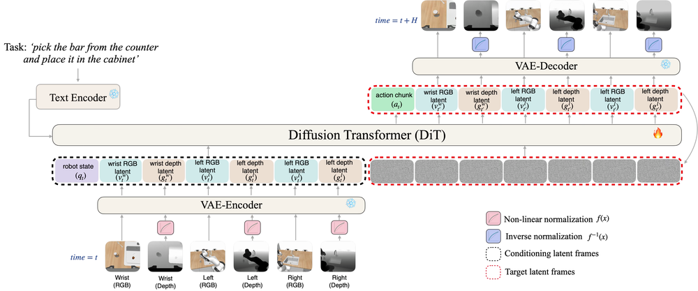

Spatially Aware World Action Model via Geometric Latent Diffusion
Preprint, 2026
World Action Models (WAMs) leverage large-scale pretrained video diffusion models to jointly predict future observations and actions, yet the prevailing models operate exclusively on RGB and do not leverage 3D information. SA-WAM repurposes a pretrained video model for joint action, RGB and depth prediction within a single diffusion backbone: a nonlinear encoding maps the unbounded depth signal into the bounded input domain expected by the frozen VAE tokenizer, reusing the encoder without 3D-specific fine-tuning. It achieves state-of-the-art results on the RoboCasa and LIBERO-Plus benchmarks and outperforms strong baselines on a real UR5 arm.